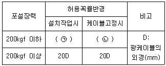
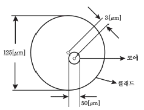
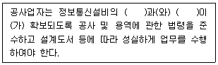
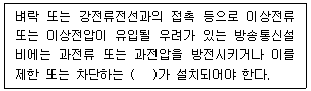

통신설비기능장 (2020-09-26 기출문제)
1과목: 임의 과목 구분(20문항)
1. 다음 중 비동기 전송방식에 사용되지 않는 것은?
- 시작비트(Start bit)
- 정지비트(Stop bit)
- 프레임동기비트(Frame Synchronization bit)
- 휴지시간(Idle Time)
(정답률: 82%)

2. 다음 중 디지털 교환기 가입자 정합장치의 기본 기능에 속한 것은?
- 가입자선 상태 감시(Supervision)
- 프레임 식별(Identification of Frame)
- 프레임 정렬(Alignment of Frame)
- 클럭 복구(Clock Recovery)
(정답률: 89%)
3. 직렬 전송과 병렬 전송에 대한 설명으로 틀린 것은?
- 병렬 전송은 전송속도가 빠르다.
- 직렬 전송은 근거리 전송에 적합하다.
- 직렬 전송은 시스템 구성이 간단하여 경제적이다.
- 병렬 전송은 Strobe 신호와 Busy 신호를 이용하여 송·수신을 한다.
(정답률: 73%)
4. 신호대 잡음비(S/N)의 영향 정도를 나타낸 것으로 무잡음 상태라고 볼 수 있는 것은 몇 [dB]인가?
- 0
- 10
- 30
- 60
(정답률: 68%)
5. 다음 중 전자교환기에서 교환기능을 수행하기 위한 기본회로가 아닌 것은?
- 포착회로
- 계수회로
- 증폭회로
- 확인회로
(정답률: 79%)
6. 패킷 교환망에 접속되는 단말기 중 비패킷형 단말기(Non-Packet Mode Terminal)에서 패킷의 조립 및 분해 기능을 제공해 주는 일종의 어댑터는?
- GFI
- PTI
- SVC
- PAD
(정답률: 81%)
7. 오류검출방식 중 연속적인 2진 데이터 전체 블록에 대한 오류검사에 효과적인 방법은 무엇인가?
- 자동반복요청(ARQ) 방식
- 순환중복검사(CRC) 방식
- 패리티(Parity) 검사방식
- 전진오류정정(FEC) 방식
(정답률: 75%)
8. 디지털 신호를 원 신호 그대로 전송하거나 또는 전송로에 적합한 펄스파형으로 변환하여 전송하는 전송방식은 무엇인가?
- 반송대역 전송방식
- 베이스밴드 전송방식
- 주파수대역 전송방식
- 광대역 전송방식
(정답률: 79%)
9. 펄스 변조방식 중 디지털형 펄스 변조방식으로 옳은 것은?
- PCM
- PAM
- PPM
- PWM
(정답률: 78%)
10. 다음 중 에러를 검출하여 정정까지 할 수 있는 코드는?
- ASCII 코드
- Parity 코드
- BCD 코드
- Hamming 코드
(정답률: 90%)
11. 다음 중 FM복조기에 사용되는 PLL회로의 기본적인 구성요소가 아닌 것은?
- 샘플링 회로
- 위상 비교기
- 저역통과 필터
- 전압제어 발진기
(정답률: 73%)
12. 변조신호에 따라 송신장치가 반송파를 진폭변조 할 때에는 변조도가 몇 [%]를 초과하지 아니하여야 하는가?
- 100[%]
- 90[%]
- 80[%]
- 60[%]
(정답률: 73%)
13. 다음 중 안테나 특성을 광대역으로 하기 위한 방법으로 옳지 않는 것은?
- 보상회로를 사용한다.
- 안테나의 Q를 높게 한다.
- 상호임피던스 특성을 이용한다.
- 진행파 여진형의 소자를 이용한다.
(정답률: 76%)
14. 다음 중 최초의 상업통신 위성은?
- INTELSAT
- SPUTNIK
- TAIROS
- ALPHANET
(정답률: 79%)
15. 다음 중 제4세대 이동통신의 핵심 기술이 아닌 것은?
- OFDM
- MIMO
- 스마트 안테나
- 레이크 수신기
(정답률: 85%)
16. 다음 중 안테나의 손실저항이 발생하는 원인이 아닌 것은?
- 접지저항
- 도체저항
- 복사저항
- 유전체 손실
(정답률: 74%)
17. 다음 중 전파에 대한 설명으로 틀린 것은?
- 전파는 횡파이다.
- 위상속도와 군속도의 곱은 광속도의 제곱과 같다.
- 매질 중에서 전파의 속도는 투자율이나 유전율이 클수록 속도가 늦어진다.
- 전파는 빛과 같이 간섭 현상만 갖는다.
(정답률: 77%)
18. 다음 중 포락선 검파기에 대한 설명으로 틀린 것은?
- AM검파기로 가장 많이 사용되고 있다.
- 포락선 검파기의 출력파형은 변조된 신호의 포락선과 같다.
- 포락선 검파기는 정류형 검파기보다 다소 복잡하나 효율은 좋다.
- 출력파형의 찌그러짐 감소를 위해서는 시정수가 반송주파수에 대해 적당해야 한다.
(정답률: 71%)
19. 다음 중 이동통신 환경에서 발생되는 페이딩과 거리가 먼 것은?
- Short Term Fading
- Statics Fading
- Rician Fading
- Long Term Fading
(정답률: 71%)
20. 다음 중 전파의 대류권 전파에 있어서 라디오 덕트(Radio Duct)의 생성 원인이 아닌 것은?
- 전선에 의한 Radio Duct
- 주간 냉각에 의한 Radio Duct
- 대양상의 Radio Duct
- 이류성 Radio Duct
(정답률: 78%)
2과목: 임의 과목 구분(20문항)
21. 다음 중 모바일 IP의 구성요소로 적합하지 않은 것은?
- 게이트웨이(Gateway)
- 홈 에이전트(HA)
- 모바일 노드(MN)
- 외부 에이전트(FA)
(정답률: 83%)
22. 다음 중 인터넷 통신망에서 사용되는 LAN 케이블에 대한 설명으로 틀린 것은?
- Ethernet 10/100[Mbps]에서는 2Pair 선을 사용한다.
- 1번과 2번은 수신, 3번과 6번은 송신 용도로 사용한다.
- 색상은 EIA/TIA 568(B Type) 기준으로 흰주, 주황, 흰녹, 청색, 흰청, 녹색, 흰갈, 갈색 순이다.
- 음성회선 수용시에는 (4번, 5번), (7번, 8번)을 사용한다.
(정답률: 78%)
23. 다음 중 오류제어, 동기제어 등 제어절차에 대한 내용을 정의하는 프로토콜 구성요소로 적합한 것은?
- 구문(Syntax)
- 의미(Semantics)
- 시간(Timing)
- 동기화(Synchronization)
(정답률: 77%)
24. IPv4와 IPv6가 공존 한다고 했을 때 두 종류의 프로토콜을 사용하기 위한 연동방법으로 틀린 것은?
- 이중스택(Dual Stack)
- 터널링(Tunneling)
- IPv4/IPv6 게이트웨이 활용 변환(Translation)
- 홉 제한(Hop Limit)
(정답률: 84%)
25. 표준 적용범위에 따른 분류 기준이 다른 것은?
- 국제표준
- 지역표준
- 사실표준
- 단체표준
(정답률: 89%)
26. RIP 라우팅 프로토콜에 대한 최대 홉(Hop) 수와 라우팅 테이블의 업데이트 시간은?
- 15[Hops], 30[sec]
- 15[Hops], 180[sec]
- 255[Hops], 30[sec]
- 255[Hops], 180[sec]
(정답률: 84%)
27. 다음 중 전자우편을 안전하게 전송할 수 있도록 개발된 Endto-End 방식의 보안 프로토콜로 가장 적합한 것은?
- SSL
- TLS
- S/MIME
- SMTP
(정답률: 79%)
28. 문자 방식 프로토콜에서 사용되는 전송제어 문자가 옳은 것은?
- STX : 텍스트의 개시
- SOH : 데이터 블록의 시작
- SYN : 헤딩의 개시
- EOT : 문자의 한 블록의 종료
(정답률: 78%)
29. HDLC 동작모드가 아닌 것은?
- 정규 응답모드(NRM)
- 비정규 응답모드(ARM)
- 동기 응답모드(SRM)
- 비동기 균형모드(ABM)
(정답률: 61%)
30. IPv4 C클래스에서 네트워크 식별자를 27비트만 사용한다면 서브넷 마스크는?
- 255.255.255.224
- 255.255.255.240
- 255.255.255.248
- 255.255.255.255
(정답률: 84%)
31. 다음 중 UTP 케이블의 특징이 아닌 것은?
- 가격이 저렴하다.
- 전기장치나 자기장치에 의해 데이터 유실이 있다.
- 옥내용으로 전자기장의 영향이 없는 곳에 사용해야 한다.
- 꼬인 회선을 감싸고 있는 전도층이 있어 또 하나의 간섭 보호층이 제공된다.
(정답률: 77%)
32. 통신선로용 광케이블의 허용곡률반경에 대한 설명으로 괄호 안에 들어갈 알맞은 수치는?

- ㉠ 5D, ㉡ 10D
- ㉠ 10D, ㉡ 15D
- ㉠ 15D, ㉡ 20D
- ㉠ 20D, ㉡ 30D
(정답률: 73%)
33. 시내선로에 사용되는 케이블로서 심선의 절연체는 폴리에틸렌을 사용하고 모든 심선에 착색이 되어 있어 식별이 가능하며 외피는 폴리에틸렌을 입힌 것과 알루미늄 테이프 위에 폴리에틸렌을 입힌 알페스형이 있는 케이블은 무엇인가?
- FS 케이블
- CCP 케이블
- PVC 케이블
- PIC 케이블
(정답률: 70%)
34. 코어가 클래드 내에서 3[m] 편심된 광섬유 케이블의 비동심률은?

- 1[%]
- 3[%]
- 6[%]
- 9[%]
(정답률: 74%)
35. 다음 중 광파이버 접속시 모드 변환이 일어나는 원인이 아닌 것은?
- 광섬유의 축이 일치하지 않을 때
- 코어와 클래드의 경계면에 요철이 있을 때
- 접속 단면이 평행하지 않을 때
- 광섬유의 마이크로밴딩이 없을 때
(정답률: 77%)
36. 다음 중 WDM(파장분할다중화) 기술에 대한 설명으로 틀린 것은?
- 여러 채널을 광학적으로 다중화하여 한 개의 광섬유를 통해 전송한다.
- 광섬유의 손실이 적은 1,310[nm] 영역이 주로 사용된다.
- 장거리 전송을 위해 EDFA 등 광증폭기가 필요하다.
- 변조방법, 아날로그/디지털 등의 전송형태에 관계없이 광신호의 전달에도 이용될 수 있다.
(정답률: 78%)
37. 코어의 굴절률이 1.6, 비굴절률 차 0.0⑤, 대역 정수가 1인 광섬유 케이블의 전송 대역폭 B는 얼마인가?
- 2.7[kHz/km]
- 25.5[kHz/km]
- 37.5[MHz/km]
- 49.5[MHz/km]
(정답률: 66%)
38. 단상 전파 정류기의 DC출력 전력은 단상 반파 정류기 DC출력 전력의 몇 배인가?
- 같다.
- 2배
- 3배
- 4배
(정답률: 77%)
39. 주파수가 5[MHz]의 전파에 사용하는 λ/4 수직접지 안테나의 길이는?
- 5[m]
- 10[m]
- 15[m]
- 20[m]
(정답률: 62%)
40. 철도나 전철의 인근에서 누설전류로 인하여 지하에 매설된 선로에서 케이블의 부식이 일어나는 현상과 관련성이 있는 원리 또는 법칙은?
- 페러데이 법칙
- 쿨롱의 법칙
- 키르히호프의 법칙
- 브리지의 원리
(정답률: 74%)
3과목: 임의 과목 구분(20문항)
41. 참값이 100[V]인 전압을 측정하였더니 101.5[V]였다. 오차 백분율로 표시하면 몇 [%]인가?
- 0.15
- 1.5
- 15
- 150
(정답률: 89%)
42. 압력이 가해져서 타원형이 최대 직경 51[μm], 최소직경 49[μm], 표준직경 50[μm]인 광섬유 케이블 코어의 비원율은?
- 1[%]
- 2[%]
- 3[%]
- 4[%]
(정답률: 69%)
43. 신호 레벨이 -10[dBm], 잡음 레벨이 -49[dBm]일 때, 신호대 잡음비는?
- 10[dB]
- 39[dB]
- 49[dB]
- 59[dB]
(정답률: 78%)
44. 다음 중 OFDM 신호 측정에 대한 설명으로 틀린 것은?
- OFDM 신호의 품질을 확인하기 위해서는 OFDM 복조기가 필요하다.
- OFDM 신호에 대해 주파수 채널 간에 주파수 겹침이 없는지를 확인해야 한다.
- OFDM 신호에는 여러 개의 부반송파가 존재한다.
- 4G 신호는 3G 신호에 비해 상대적으로 넓은 주파수 대역폭을 사용한다.
(정답률: 55%)
45. 광 통신의 측정방법 중 하나인 투과법에 대한 설명으로 틀린 것은?
- 삽입법은 광력계 사이에 피측정 광섬유를 삽입해서 감쇠량을 측정하는 방법이다.
- 절단법은 피측정 광섬유의 일부를 절단하는 과정이 필요하다.
- 삽입법은 절단법에 비해 측정이 간단하다.
- 절단법은 삽입법과 달리 한번에 측정이 가능하므로 측정 시간이 짧다.
(정답률: 70%)
46. 다음 중 “사업용 방송통신설비”에 대한 설명으로 틀린 것은?
- 기간통신사업자 및 부가통신사업자가 설치·운용 또는 관리하는 방송통신설비
- 전송망사업자가 설치·운용 또는 관리하는 방송통신설비
- 인터넷 멀티미디어 방송 제공사업자가 설치·운용 또는 관리하는 방송통신설비
- 구내통신선로설비, 이동통신구내선로설비, 방송공동수신설비, 단말장치 및 전송설비를 관리하는 방송통신설비
(정답률: 70%)
47. 다음 중 「방송통신발전 기본법」에서 정하는 용어의 정의로 틀린 것은?
- "방송통신사업자"란 관련법령에 따라 과학기술정보통신부장관 또는 방송통신위원에 신고·등록·승인·허가 및 이에 준하는 절차를 거쳐 방송통신서비스를 제공하는 자를 말한다.
- "방송통신콘텐츠"란 지상파 텔레비전에서 방송하는 음성 및 영상을 말한다.
- "방송통신설비"란 방송통신을 하기 위한 기계·기구·선로(線路) 또는 그 밖에 방송통신에 필요한 설비를 말한다.
- "방송통신기자재"란 방송통신설비에 사용하는 장치·기기·부품 또는 선조(線條) 등을 말한다.
(정답률: 81%)
48. 다음 중 홈네트워크 설비 중 폐쇄회로텔레비전장비의 설치에 대한 설명으로 틀린 것은?
- 폐쇄회로텔레비전장비의 카메라는 주차장, 주동출입구, 어린이놀이터, 엘리베이터 등에 설치할 것을 권장한다.
- 폐쇄회로텔레비전장비를 설치하는 때에는, 설치되는 대상시설의 주요부분 등이 조망될 수 있게 설치하여야 한다.
- 폐쇄회로텔레비전의 영상은 보안용으로만 사용하고 거주자에게 제공하여서는 아니된다.
- 렌즈를 포함한 폐쇄회로텔레비전장비는 결로되거나 빗물이 스며들지 않도록 설치하여야 한다.
(정답률: 84%)
49. 다음 중 방재실에 관한 설명으로 틀린 것은?
- 항온 및 항습장치를 설치하여야 한다.
- 보안을 위하여 독립된 출입문을 설치하고, 외부로부터 전파유입이 없도록 차폐체를 설치하여야 한다.
- 바닥은 이중바닥방식으로 설치하여야 한다.
- 단지 내 방범, 방재, 안전 등을 위한 설비를 설치하기 위한 공간이다.
(정답률: 81%)
50. 다음은 정보통신공사업자의 성실의무에 관한 사항이다. 괄호 안에 들어갈 말로 적합한 것은?

- 기준, 기술
- 품질, 안전
- 성능, 기능
- 역무, 서비스
(정답률: 86%)
51. 다음 괄호 안에 들어갈 내용으로 가장 적합한 것은?

- 과전류
- 보호기
- 차단기
- 피뢰기
(정답률: 77%)
52. 용역업자의 발주자에 대한 감리결과 통보내용이 아닌 것은?
- 착공일 및 완공일
- 설계도서 평가결과
- 사용자재의 규격 및 적합성 평가결과
- 정보통신기술자 배치의 적정성 평가결과
(정답률: 56%)
53. 다음 중 과학기술정보통신부장관과 방송통신위원회가 방송통신을 통한 국민의 복리 향상과 방송통신의 원활한 발전을 위하여 수립하는 방송통신기본계획에 포함되어야 하는 사항이 아닌 것은?
- 방송통신서비스에 관한 사항
- 방송통신콘텐츠에 관한 사항
- 방송통신설비의 운용에 관한 사항
- 방송통신기술의 진흥에 관한 사항
(정답률: 71%)
54. 구내통신선로설비의 수평배선계의 구내배선은 주로 어떤 구조로 공사하여야 하는가?
- Tree형
- Ring형
- Star형
- Circular형
(정답률: 80%)
55. 다음 중 공사의 설계도서 보관기준으로 틀린 것은?
- 공사의 목적물 소유자는 보관하기 어려운 사유가 있는 경우를 제외하고 공사에 대한 실시·준공설계도서를 공사의 목적물이 폐지될 때까지 보관할 것
- 공사를 설계한 용역업자는 그가 작성 또는 제공한 실시설계도서를 해당 공사가 준공된 후 5년간 보관할 것
- 공사를 감리한 용역업자는 그가 감리한 공사의 준공설계도서를 하자담보책임기간이 종료될 때까지 보관할 것
- 시설교체 등으로 실시·준공설계도서가 변경된 경우에는 변경되기전의 실시·준공설계도서도 보관할 것
(정답률: 64%)
56. 재고를 '0'으로 하여 재고비용을 최소화하려는 것으로 비용절감, 재고절감, 결함제거 등을 통하여 생산성을 높이기 위해 입하 재료를 재고로 두지 않고 그대로 사용하는 상품관리방식은?
- 로트 생산방식(Lot Production System)
- 셀 생산방식(Cell Production System)
- 적시 생산방식(Just In Time System)
- 도요타 생산방식(Toyota Production System)
(정답률: 84%)
57. 다음 중 작업시간연구의 범위에 포함되지 않는 것은?
- 간접측정
- 마이크로모션연구
- 표준자료법
- 실적자료법
(정답률: 81%)
58. 직무를 기본 동작으로 분해한 다음, 각 기본 동작에 소요되는 시간을 사전에 스톱워치나 모션 픽처에 의해 결정되어 있는 표에서 찾아 이들을 합산하여 정상 시간을 구하고, 이에 여유율을 적용하여 표준시간을 구하는 작업측정기법은?
- PTS법
- 시간연구법
- 표준자료법
- 워크 샘플링법
(정답률: 66%)
59. 다음 중 '관리도'에 대한 설명으로 틀린 것은?
- 공정상의 상태를 나타내는 특성치에 관해서 그려진 그래프이다.
- 1924년 Shewhart에 의해 처음 사용되었다.
- 현재의 데이터 해석에만 사용된다.
- 작업표준을 만들어 주어도 관리도는 그려야 한다.
(정답률: 80%)
60. 제품의 제조명령에 대해서 1공정 1전표를 작성해 완료예정일순으로 전표를 정리하여 지연작업을 조치하는 방법은?
- ABC Analysis
- Come-Up 시스템
- PERT
- 간트차트
(정답률: 80%)